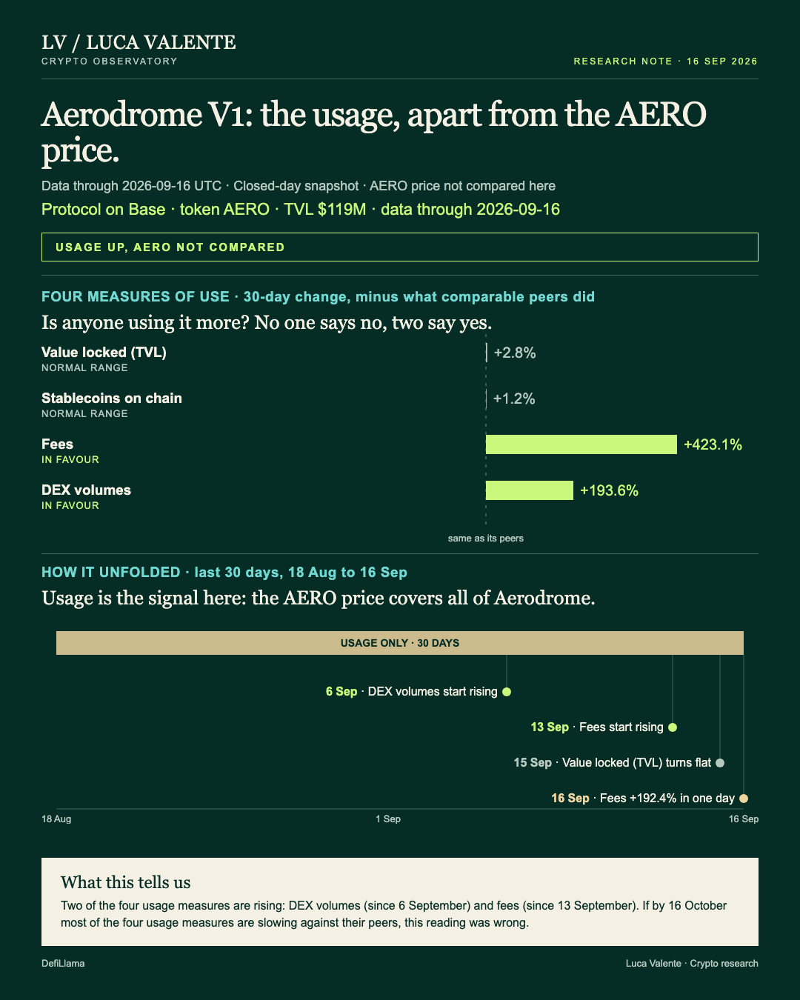
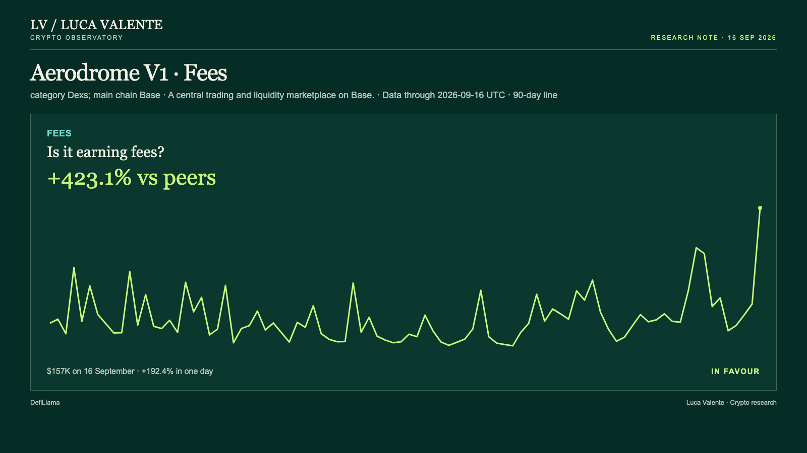
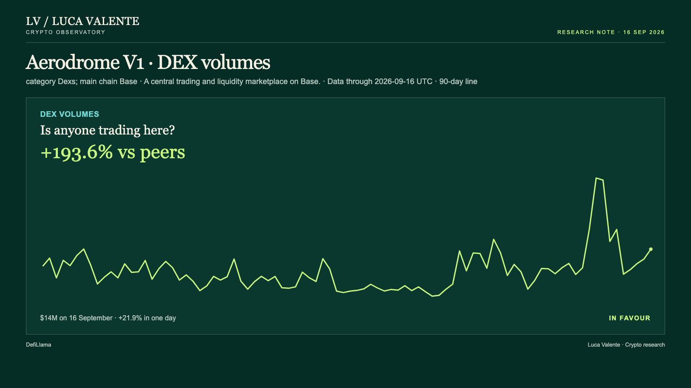

Has a Fee Spike This Big Happened Before?

Fees on Aerodrome V1 jumped 192.4% in a single day, to their highest level in ninety days of data. Two of its four usage measures were already climbing before this jump. The other two are flat once the group is netted out. For anyone tracking activity on Base, that split is what matters. Some measures are leading, others are not confirming it yet.
Aerodrome V1 is a central trading and liquidity marketplace on Base. The numbers here are its own. They do not cover the rest of Aerodrome. Its token, AERO, prices all of Aerodrome, not just V1. So I read V1's usage without checking it against the AERO price.
Jumps like this are not common. They are not unheard of either. Comparing only jumps at least as big as today's, 156 similar one-day fee jumps have hit 14 comparable exchanges since September 2025. Aerodrome V1 has had 12 of its own, the last on 27 July.
A week later, the group was still at or above the jump-day level in 49 of 156 cases. The other 107 were lower. A month later, only 147 of those cases had reached a month; nine were too recent. 36 were still up, 111 down.
Its own 12 jumps did worse at first. A week later, only 1 of the 12 was still at or above the jump-day level; the other 11 were lower. A month out, 5 of the 12 were still up. Seven were down.
A minority of these jumps did hold. What I want to know is whether the thirteenth one joins them, or the majority that faded.
The rise in fees did not start today. It has been climbing since 13 September, reaching $157,480 on 16 September, up from $53,853 the day before. Over 30 days, fees are up 581.9%. Net of the group of 27 exchanges, they are still up 423.1%. That confirms today's level is not inside fees' normal range for the period.

Volume moved first, rising since 6 September. After a peak of $32 million on 8 September, it is now less than half that. It was $13.9 million on 16 September, still up 21.9% in a day and up 193.6% over 30 days net of the group. Today's figure is about $5.6 million above the ninety-day average of $8.28 million. The underlying rise has not disappeared with the peak.

Aerodrome V1's TVL, the money parked in its pools, and the stablecoins on Base did not follow. Each has its own reason not to count as evidence either way. TVL sits at $119 million, up 2.8% net of the group. Over the same ninety days it swung between $105 million and $135 million. A 2.8% move sits inside its normal range. Stablecoins on Base, the chain Aerodrome V1 runs on, sit at $5.04 billion, up just 1.2% net of the group. Over the same stretch they ranged from $4.79 billion to $5.08 billion, a wider swing than the move itself. That number tells me little too.
TVL fell 5.3% the same day fees jumped 192.4%. That level, $119 million, is still inside the range it has held for ninety days: $105 million to $135 million. What surprised me is the gap between the fee line and the TVL line, more than the one-day fall itself.
The twelve precedents set the odds; the test comes on 16 October. If by then most of the four usage measures are slowing against their peers, this reading was wrong.
For now, two measures are leading and two have their own reasons to sit still. I am watching whether the leaders keep pulling ahead, and whether the two quiet measures start slipping behind their peers.
Sources: DefiLlama.
Peer group: 27 exchanges tracked by DefiLlama. 'Net of the group' is the 30-day change minus the group's median.
Not financial advice. This is a research note based on public on-chain data.
Corrected on 23 September: the set of comparable jumps now includes only one-day fee jumps at least as large as this one; counts updated.